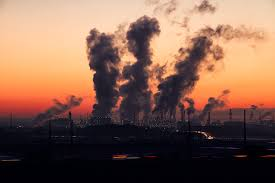
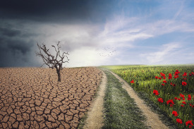

Los efectos negativos en el medio ambiente generalmente se estrucruraen varias categorías que ayudan a comprender los diferentes tipos de impacto.
Estas clasificaciones faciitan el análisis, la gestión y la mitigación de los problemas ambientales problemas.
A continuación se detallan los principales tipos de efectos negativos clasificdos según su naturaleza y alcance:
- Efectos por contaminación
- Contaminación del aire
- Contaminación del agua
- Contaminación del suelo
- Efectos por agotamiento de recursos naturales
- Deforestación
- Sobreexplotación de recursos hídricos
- Agotamaiento de combustibles fósiles y minerales
- Pérdida de biodiversidad
- Efectos por cambio en el clima
- Calentamiento global
- Acidificación de océanos
- Eventos climáticos extremos
- Efectos sobre la salud y calidad de vida
- Efectos directos en la salud humana
- Inseguridad alimentaria
- Impacto de la calidad de vida
- Efectos por generación de residuos
- Basura y residuos sólidos
- Residuos tóxicos y peligrosos
- Microplásticos y desechos marinos
- Efectos por alteración de ecosistemas
- Pérdida de hábitas
- Invasión de especies tóxicas
- Desertificación
- Efectos sociales y económicos
- Migración ambiental
- Pérdidas económicas
- Conflictos por recursos
Impacto del ser humano
Las actividades humanas en ocasiones perjudican los ecosistemas
Efectos por generación de residuos

"Contaminación"
Lleva aparejado cambio climático y enfermedades en personas y animales
Efectos por contaminación
